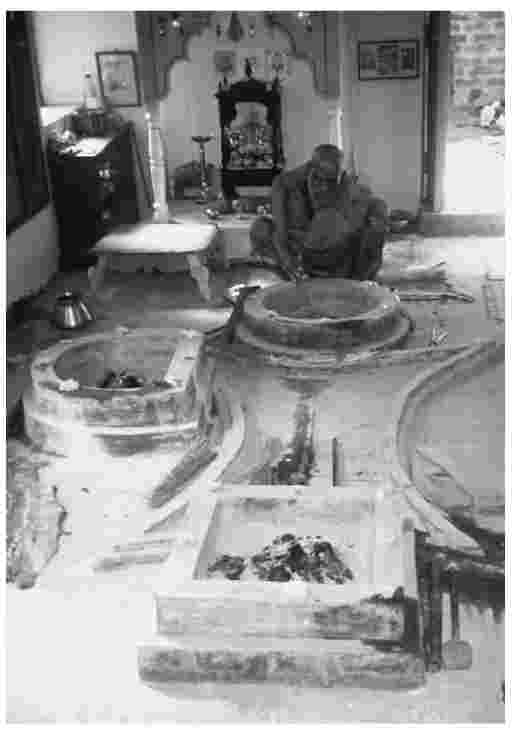
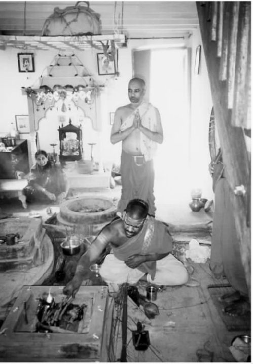
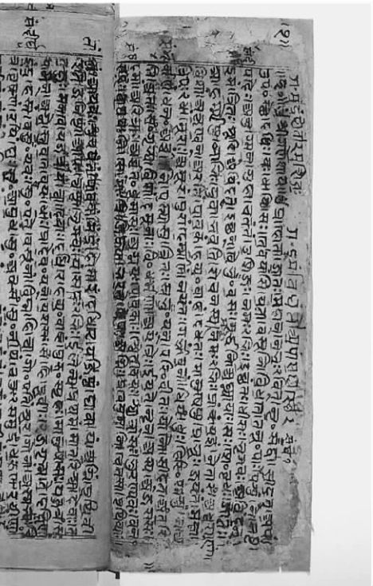
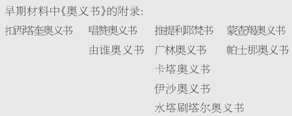

公元前5世纪初：通过观察当时印度北部婆罗门僧侣们形成的观念和实践，我们将从这里开始对印度哲学思想展开讨论。从这个恰当的角度开始有几个原因。第一，此时在印度北部婆罗门传统处于强势，并且仍是对国家的社会宗教结构拥有持久操控权的唯一传统。不论其他传统的观念和实践在某些时候如何具有影响，始终控制着规范的标准的仍是婆罗门传统。第二，到公元前5世纪初，在婆罗门传统中并存着两支彼此不同的流派，且我们确知这两个流派都能够将其重要的特征和观念突显出来。第三，或许对我们的目的来说也是最重要的一点，从对这两个流派的讨论中，我们能够更清楚看出他们如何共同协作从而促进了日后质疑、辩论和试图反驳其他思想流派的盛行。为了说明以上要点，我们还将考察这两支流派如何从早期传统中逐步形成。
公元前5世纪左右的婆罗门人是雅利安人的后代。几个世纪以前，雅利安人带着自身的传统和习俗从欧亚大陆的中部来到印度西北部定居。很长一段时间内，他们奉行着遵从祭祀和基于仪式的宗教，其中很多神圣的细节都被小心地记录、保存在仪式“手册”中。那时书写还不为他们所知，属于不同宗族、为仪式作出各自贡献的婆罗门僧侣们有责任把与其有关的特定仪式活动日程的材料以口头方式留存下来。他们非常严格地履行这项义务，因为只有做到准确，祭祀的效果才可信赖。各种各样的记忆方式日趋完善，从现今我们可以掌握的证据来看，其准确性很可能已达到了相当高的程度。
年代表
约公元前2000—公元前1500年：建立在仪式活动基础上的吠陀献祭传统被雅利安人带到了印度西北部。该传统被婆罗门的僧侣们保留和执行着。
约公元前800—公元前500年：在早期《奥义书》的教义记录里，提到了知识是最为重要的；婆罗门传统也信奉这些教义。
公元前500年前：婆罗门传统中崇礼派与灵智派两教派分支并存。
尽管吠陀祭祀仪式的举行现在被看作是一种宗教活动，但它主要还是出于现世的考虑。也就是说，祭祀的主要目的是为了使宇宙现状维持在其最佳水平上。祭祀的主要对象是宇宙中自然秩序的各个方面，如太阳、雨、闪电和风等等，以及诸如契约和誓言之类的一些抽象原则。祭祀的对象被统称为提婆。祭祀有个基本原则：如果人们正确地举行了祭祀仪式，提婆将会以一种极为仁慈的方式发挥其在宇宙中的作用来回报众生。因此宇宙秩序，也就是后来我们所知的“达摩”法，被一直保留下来。举行这些献祭活动的必要性在仪式手册中已经明示给婆罗门的众人。这些组成了《吠陀经》主体的早期部分，因而它们也可被称作吠陀仪式手册，保存下来的祭祀宗教有时也被称为吠陀献祭宗教。
雅利安人的祭祀仪式 是由一群专门的人（婆罗门的僧侣们）来主持的，他们在仪式中代表着有权利和义务去雇佣他们的雅利安人。祭祀在一个特别选定的地方举行，围绕着一个中心火源。伴随着说话、诵经和低语发出的言词与声音，人们把一些装有煮熟的谷物或油等的特殊器皿作为祭品投入火中。从对场地的测量到应该供奉什么物品以及举行仪式可使用的话语，祭祀的方方面面在仪式的手册里都有描述。
词语“吠陀”的意思是“知识”。它指这样一种信念，即约公元前5世纪时婆罗门的先辈们已知晓或“见到”《吠陀经》中蕴涵的真理（这就是他们被称为先知的缘故）。这种理解完全不是出于启示或具体授予真理，而是出于客观永恒的并非源于人类的宇宙真理。这些先知们仅仅是把已记载下来的东西传授给后代。因此，吠陀祭祀经文的地位是首要的。任何通过这些主体材料明示给人们的都被看作自动生效——一定要去做，因为它是必定要做的：这已是永恒真理的一个部分。因此，人们为了保证有效性便加强了对准确性的关注，他们认为每一种仪式活动的正确履行已构成宇宙义务的一个组成部分。
在仪式中除了所做的体态动作之外，仪式手册中还规定了各种祷词和声语，并且这些可被统称为惯语的东西必须在祭祀活动中以说、念或是唱的方式表现出来。身体动作和声语都对祭祀的结果起到促进作用：这两者都是重要的“行动”或业。构成惯语的语言是梵语，因此语言更多地被看做是一种神圣的极具说服力的工具，而不仅是一种沟通的方式。事实上，它被看作是以声音的方式来体现对宇宙的感受。

图1吠陀祭祀仪式中所用的器皿

图2吠陀祭祀仪式在当今仍被履行着，与古时候相比几乎没有变化
梵语
sam skr t（梵文）这个词有一个表声音的词根“kr ”，它与karma（业）一词同根。前缀“sam s”使这个词语带有“形式良好”或“结构良好”的含义。这暗示了梵文词语的正确发音与其所指称的宇宙之意之间的相互关联。
由于吠陀材料和梵语语言二者的地位和能量，关于它们的知识一直被婆罗门祭司们牢牢地守护于团体内部。他们可能曾以这类材料需要保护为由一直设法使这种独占性名正言顺，但这同时也把祭司本身推向了当时社会最高权威的位置，而且社会本身也以某种方式进行组织来维持这种权威。现在所说的印度种姓制度的起源就被记载在吠陀仪式手册中，在该制度中人们是按照对仪式的虔诚度来划分等级的，最虔诚的婆罗门被划入最上层。他们的虔诚不仅赋予他们地位，而且还使他们能够将神圣的行为和献祭中的语言牢固、有效地联系起来。
因此，吠陀献祭宗教的主要特征是：以身体和声音方面的仪式行为为基础；其准确度对保证祭祀的有效性至关重要；完全由婆罗门的祭司们传承和掌控。仪式活动的履行是为了维持宇宙的延续，人们相信各种身体和声音方面的祭祀行为都与其相应的作用息息相关。

图31434年吠陀手稿摘录
虽然该体系在很大程度上是现世的，但据很多《吠陀经》经文记载，某些古代的仪式专家们同时也善于思索宇宙的本质，这种本质是他们一直试图证明的。他们认识到献祭所祈祷的天神（提婆）在宇宙中所起的作用只局限于某些特定地域和专门的角色，他们也在思索是否还存在一个更伟大的能者，关于宇宙本身的起源他们也想知道更多。一切是如何开始的？是谁或是什么（假如有这样的人或物存在）创造了这些？它是始于一个金黄色的胚胎吗？它是由一个天上的建筑师建成的吗？它是从一次宇宙祭祀中出现的吗？话语又扮演怎样一个角色（即神圣语言的声音）？万物的生气都来自于气吗？或万物都始于时间吗？那之前有什么？还有或许最重要的是：谁知晓这一切？
这种古代的思索就其广度和深度而言都是非比寻常的，这说明了祭祀者们对于他们所做的事情及其性质的分析和思考已达到了相当的程度。我们没有证据证明这种思索对仪式本身产生了影响，事实上这也是不可能的，因为仪式都被十分精确地规范化了。但是不断的质疑还是有可能对随后的观念与宗教活动为婆罗门传统所接纳起到了促进作用。伴随着许多外在、可见宗教礼仪的不断实行，据《吠陀经》经文记载，某些人开始退却进而从更深的层次去思考祭祀的本质。最后，他们中的一部分人逐渐认识到通过集中思想和形象化的方式可以实现祭祀的“内在化”。
作为吠陀主体经文的《梵书》和《森林书》（见下一表框）记录了这种潮流的渐进式发展，但是，正是在《奥义书》的教义中人们发现了最能代表其发展鼎盛时期状况的经文。《奥义书》组成了吠陀教规的最后部分——也被称作“《吠陀经》的尾声”，它们的内容作为仪式材料被归入同一个婆罗门宗族。
那时候既没有非存在物也没有存在物，地无界天无边。什么扰乱了这一切？在哪儿？又在谁的保护之中？难道水真的深不见底吗？
那时无所谓死亡也无所谓永生，黑夜同白天一样没有明显的区别特征。凭自己的本能平稳地呼吸，除此之外再无他物。
开始时，天地间一片混沌；没有明显界限，宇宙是一片汪洋。被虚无所覆盖的生命力由于热能的缘故开始苏醒。
谁真正地知晓？谁又在此宣告？一切从何而来？又因何而生？在宇宙创造之后提婆随之诞生，那么谁又知道它为何出现？
这个造物是如何产生的——或许它创造了自身，或许它没有这样做——在最高天俯视的那一位，只有他知道——或者他也不清楚。
（《吠陀经》第10卷第129页，节选自《吠陀经：文集》。弗莱赫蒂·温迪·奥丹尼格编译，哈蒙德沃斯：企鹅出版社1981年版）
《吠陀经》的年代尚不能确定，但普遍认为它要远远早于公元前5世纪——或许早至公元前1500年。
《奥义书》包含了大量关于举行祭祀仪式的本质、目的及其必要性方面的内容，令人沉思、给人启示。但是，使其能够同其他早期婆罗门经文区分开来的是，它还包括了一些促使人们探索理解人类自身本质的教义和思想，这些教义和思想都是遵循仪式基本原则的。此外，它们所要探索的知识都是主观、深奥的内在“精神”知识——而非有关祭祀仪式的外在知识。这标志着先前的以宇宙为中心来思索的传统已转向了更多地以人为中心来思索，或者将个人置于早期纯仪式盛行年代更广袤的宇宙图景中，关注更具体的内容。在早期《奥义书》中人们首次了解到这样的想法，即人类是在其前世行为所造就的环境中不断地轮回再生的。他们声称，尽责而又正确地举行祭祀活动不但会对祭祀对象产生影响，而且还将会对一个人来世的生存状况产生有益的作用。这就是业（行动）的法则，这一法则不仅对于仪式，而且对人类经验都是适用的。
吠陀的材料被不同的婆罗门宗族保存。四种分支的仪 式手册 被不同派别的婆罗门僧侣们使用，而且随着时间的推移由《梵书》、《森林书》 以及（最后由）《奥义书》 所补充。
四种分支仪式：
梨俱（赞诵）娑摩（歌咏）耶柔（祭祀）阿闼婆（祈禳）
《梵书》和《森林书》的经文被融合到这些宗族之中，其中还包含了关于祭祀和“祭祀内在化”之本质的一些观念。

然而，渴求的最重要的一点是要对个人自身或灵魂本质获得深入的洞悉，这个自身或灵魂梵语中称为真我（ātman）。《奥义书》宣称个人和宇宙是一体的，并一再地表明个人的真我与其所生存的环境是不可分割的。一个有名的论断是：“你就是（所有）那些。”（《唱赞奥义书》6.8及其后）获得关于这种认同的经验方面的洞察是值得努力的，因为这种知识能够使人从不断的轮回中获得解脱（梵语为moksa）。这一教义第一次把救赎的观念带到了婆罗门传统中。随着祭祀传统一直被实施到当今，人们把解脱当成了人类生存的最高目标。从完全积极的意义上来看，解脱使得人们避开轮回的乏味并体验到不朽：“能够看到这一点的人（再也）不会经历死亡、病痛或悲伤。”（《唱赞奥义书》7.26.2）
从普遍性而不是特殊性的角度来看，自我和宇宙同一这一教义也响应了关于宇宙本质的早期推测。在早期的《奥义书》里面，“宇宙”一词采用的是一个中性的名称Brahman（不要和其阳性写法Brahmā混淆，后者是古代传统中一位重要天神的名称）。Brahman代表一种客观的绝对，也可以被称为同一性或存在。在一个重要的章节中，一位父亲教导儿子时说道：
（《唱赞奥义书》6.2.1—2）
本体论术语一元论 所指的就是宇宙是唯一 的这一教义。这意味着宇宙中只有一个存在物，除此之外别无他物，所以无论什么存在最终都是同一事物，即便它没有呈现给我们这种情景：我们不必非要看到它才相信其真实存在。一元论是个数字概念而不是一个质量概念。要了解同一性的性质和特征——如果有的话——还需要其他的资料。
一元论也不是一个有神论术语，不能和一神论 混淆。一神论指的是只有一个神，但没有告诉我们在其本身之外的任何其他内容。它并没有说明只有唯一。如果宇宙是一元的，那么在那一元性之中就有可能存在被视为神的某物——或者，事实上，有多神存在——但这都不会如经验世界明显的多样性那样与潜在的同一性有联系。
早期的《奥义书》中充满了阐明同一性之含义的论述：“正是通过看、听、反思和集中注意力于个人的真我，整个世界才得以被认知。”（《广林奥义书》2.4.5）“真我存在于下、上、东、西、南、北；真我实际上就是整个世界。”（《唱赞奥义书》7.25.2）“‘真我就是梵’的说法直截了当又毫不含糊地把真我同宇宙同一起来，最终不是二而是一。”
如上所述，对于真我和宇宙同一性的关注，说明了《奥义书》中所包含的教义可以被看作是对祭祀进行内化的极点。由针对外部世界进行的外在、可见的祭祀仪式径直转向了对世界内在的理解。《奥义书》中还坚持祭祀仪式的传统，因为其中没有任何一处表明应该放弃举行这些仪式。相反，他们强调必须要举行仪式，而且还强调所举行的仪式是在纯正性仪式基础上按照社会的等级结构来进行的。由此，仪式和《奥义书》的教义得以相互并存于婆罗门传统中。吠陀仪式手册和《奥义书》所记载的主要情况大致相似，这表现在两者都被视为包含着关于真理的教义。
然而人们也很快看到，该传统的两个分支无论采用何种方式都潜在地存在着一些相互分裂或具有内在分歧的问题和观点。《奥义书》不仅如上所述把关注的焦点从现世对仪式的遵从转向对于个人命运和本质的思考，而且还把对深奥知识的获得看作比履行仪式活动更有意义和目的性。再者，或许是更重要的一点，吠陀对仪式的履行和奥义派对于知识的求索都是以他们对有关现实本质的不同理解为基础的。《奥义书》明确表示，那些重要的仪式只能以这样一个世界观为前提，即认定纷繁世界是超越现实的：事实上，仪式的目的就是维护这样一个纷繁世界。但是这种纷繁，如《奥义书》所示，仅仅是一种经验（或常规）的现实，而且只有关于世界深层同一性之更广阔现实的知识才能达到更高目标：
（《广林奥义书》4.4.19）
那些宣称我们周围世界具有确切无疑的多样化的人实际上是多元论者 。与这种本体论相关的其他术语还有多元现实主义 和超验现实主义 。也就是说我们所见之物——经验世界的多样性——本身是真实的，超越（或“外在于”）与人类感知相关的一切。
那些宣称经验现实的多样化从超验角度来看并不真实的人（包括那些宣称现实就是唯一的人），他们不否认经验现实存在，相反，他们所表明的是一种区别于我们日常表面所见的更高程度的现实——绝对现实。经验现实在此情况下只是“传统”意义上的。
在公元前5世纪早期的几十年间，这两支派别并没有表现出互相争论或由于世界观不相容而互争高低的情况。但正如我们将在以下章节所见，这种情况很快发生变化。在这个世纪人们看到了佛教与其他教派对建立在《奥义书》基础上的婆罗门教教义提出的挑战，并且很快，祭祀专家们为捍卫他们的现实世界观也必须去反对那些试图反驳或奚落祭祀之意义的人。为了做到这些，他们必须身体力行地去反驳关于经验世界中常规状况的任何观念，比如《奥义书》和其他典籍中所提到的那些。这也意味着婆罗门传统不但要与来自外部的批评作斗争，而且它还越来越受困于基于两派史料的不同起源而形成的内部分歧。
之后，那些先前对于同一传统中并存的两派的合法性并不存疑的人，也试图探寻克服他们相互之间不和谐之处的方法，指出人在一生中结婚和生子都有举行仪式的义务。这就是说，不但要保证和维持这个依赖于仪式的世界，而且还要不断地繁衍后代，因为婆罗门主导的社会结构还要依靠他们来延续。一旦这一时期过去，他们的注意力将会再集中到寻求解脱的知识上来。时至今日，那些首要关注宗教惯例而不是哲学辩论的人把这看做是婆罗门的正统学说，这一学说承认整个吠陀的首要地位。
随着更具哲学性和争辩性的论辩的进一步发展，各种传统的思想家们都被牵涉进来，但是在早期材料的直系宗族中有两支教派——弥曼差派和吠檀多派分别将他们不同的教义和世界观建立在对吠陀仪式史料和《奥义书》的解释上。这两种史料是公元前5世纪早期婆罗门传统中所并存的崇礼派和灵智派的建立基础，后来逐渐被其挑战者、调解者及注释者们理解为吠陀的“实践派”（karma-kānda）和“理论派”（jñāna-kānda）。